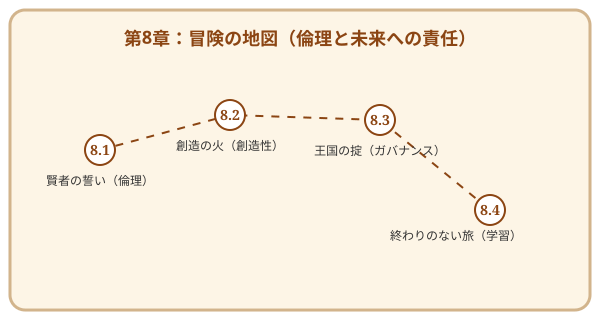

第8章 エンジニアの倫理と未来への責任——終わりなき冒険の始まり
この章で手に入れる力
ここまでの7つの章で、あなたは要求を聴き、設計し、実装し、磨き、守り、届け、そしてチームの力で価値を生み出す——ソフトウェア工学の一連の旅を歩んできました。
しかし、この旅には「ゴール」がありません。技術は進化し続け、社会は変化し続け、あなた自身も成長し続けるからです。そして、AI時代を生きるエンジニアには、技術力だけでなく、その力をどう使うかという倫理と責任が、これまで以上に求められています。
この章では、AIと共に創造する時代のエンジニアとしての誇りと責任を考え、そしてソフトウェア工学という「一生遊べるゲーム」を、これからも楽しみ続けるための道しるべを手に入れましょう。
冒険の地図

読了後のあなた
この章を読み終えると、あなたは以下のことができるようになります。
- 倫理を貫く: 「この技術は誰を幸せにするのか？」と問い、誠実な判断ができる
- 問いを立てる: AIをパートナーとして、人間ならではの視点で価値を定義できる
- 学び続ける: 好奇心を燃料に、不変の原理と流行の技術をバランスよく吸収できる
- 世界を広げる: コミュニティを通じて知を共有し、エンジニアとしての旅を愉しめる
この本で手に入れた力は、始まりに過ぎません。ソフトウェア工学という「一生遊べるゲーム」を、存分に楽しんでいきましょう。
さらに学ぶためのリソース（章全体）
- 📚 書籍: Andrew Hunt, David Thomas『達人プログラマー 第2版 ―熟達に向けたあなたの旅』（生涯にわたるエンジニアの成長哲学。第8章のテーマと強く共鳴します）
- 📚 書籍: Cal Newport『大事なことに集中する ―気が散るものだらけの世界で生産性を最大化する科学的方法』（Deep Workの重要性を説く、現代の知的生産者のための必読書）
- 📚 書籍: Virginia Eubanks『格差の自動化 ―データによる選別・監視・処罰』（技術がもたらす社会的不平等の実態を暴く衝撃作）
- 📚 書籍: Cathy O'Neil『あなたを支配し、社会を破壊する、AI・ビッグデータの罠』（アルゴリズムの倫理的影響を警鐘する。原題: Weapons of Math Destruction）
- 📚 書籍: Eric Raymond『伽藍とバザール』（オープンソースの思想と文化を決定づけた伝説的エッセイ。山形浩生氏による全訳も公開されています）
📜 賢者伝説（学術論文）
- 📄 50s: Alan M. Turing "Computing Machinery and Intelligence" (1950)（「機械は思考できるか？」という問いを立て、AI時代の哲学の基礎を築いた記念碑的論文）
- 📄 10s: A. Jobin, M. Ienca, and E. Vayena "The global landscape of AI ethics guidelines" (2019)（世界中のAI倫理ガイドラインを俯瞰し、共通の原則（透明性、正義、責任など）を整理した現代の指針）